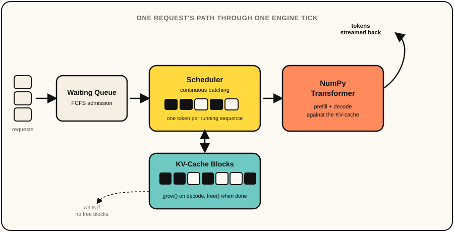
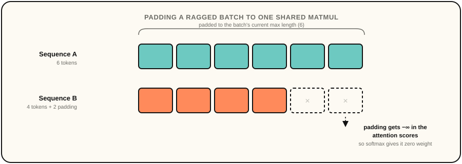

mini-inference-server
A continuous-batching LLM inference server I built from scratch. It runs the serving-engine ideas behind vLLM and TGI for real, against a small transformer I hand-wrote in NumPy, because I wanted to actually understand what's inside them instead of just calling an API.
I wanted my next project to actually be about AI, not just an app with an API call bolted onto it. When I looked at how vLLM and TGI actually get their throughput, the thing that stuck with me was that almost none of it is about the model itself. It's the scheduling. How do you keep a GPU busy when a hundred people are asking for wildly different amounts of text at wildly different times? That's a systems problem, which is exactly the kind of thing I got hooked on in my operating systems and distributed systems classes, so it felt like the right project to actually sit down and build.
So that's what this is. It's a real continuous-batching engine, with a request queue, admission control, and a scheduler that packs many in-flight generations into one batched step, running on top of a transformer I wrote myself in plain NumPy so I'd actually understand what the KV-cache underneath it is doing, instead of treating the model as a black box some framework hands me.
The engine has a request queue with admission control, a scheduler that packs
many in-flight generations into one batched step, and a KV-cache block
manager, all running on top of a transformer I wrote myself in plain NumPy
rather than a pretrained model. I wanted the KV-cache logic to be code I
actually understand line by line instead of something living inside someone
else's library. Weights are randomly initialized by default, since the point
of the project is serving mechanics and throughput, not text quality, and
ModelWeights.load() is there if I ever want to drop in trained
weights later.

A KV-cache is only worth anything if decoding with it gives you the exact same
result as recomputing the whole sequence from scratch, so the first real test
I wrote was just that. I ran a prompt through prefill(),
separately decoded the last token using a cache from the first N-1, and
asserted the logits matched. Extending that to a ragged batch, two sequences
of different lengths decoded together in one call, is what actually caught
bugs in my padding and masking logic.
The hard part of continuous batching is that sequences sharing a decode step almost never have the same length, someone's three tokens in while someone else just joined. I pad each sequence's cached K and V up to the batch's current max length and mask out the padding in the attention scores, so it's still one batched matmul instead of a loop per sequence, the same technique real batched-decode implementations use before something like PagedAttention avoids the padding waste entirely.

My first version of step() admitted waiting requests and then
immediately ran a decode step on the whole batch, including the ones that had
just joined. That meant a brand new request got two tokens in its first tick
while everyone else got one, which quietly broke the guarantee the whole
design rests on, that every sequence advances by exactly one token per tick.
My scheduler tests caught it immediately by asserting exact token counts after
a single step(), and the fix was to decode only the sequences
that were already running.
step() is a plain synchronous method on purpose, since it's just
NumPy matmuls with nothing to await, but that meant I couldn't use
asyncio.Queue for streaming tokens back to a client the way I
first tried. On Python 3.9 it binds to whatever event loop is running the
moment it's constructed, and submit() has no guarantee one exists
yet. I ran into that as a very confusing test failure before I understood what
was happening. The fix ended up simpler than the original design,
RequestHandle just polls the request's growing token list
instead.
None of this matters if batching doesn't measurably beat serving requests one
at a time, so bench.py runs the exact same model and weights both
ways. On my machine, 24 concurrent requests generating 40 tokens each finish
about 4x faster batched than sequential, and 64 requests at 50 tokens each
gets to roughly 5x. The peak batch size the benchmark reports is capped below
the request count when the cache pool is smaller than demand, which is the
admission control actually doing its job.